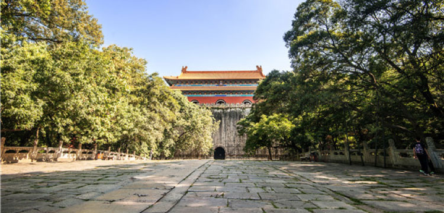

请在支付完成页面的【完成】按钮下勾选“关注钟山旅行” 可再次进入服务号收听讲解

明孝陵语音讲解
讲解内容
1
钟山风景区概述
2
总说——世界文化遗产明孝陵
3
平民皇帝朱元璋的传奇人生
4
孝陵选址——宝地紫金山，风水独龙阜
5
明孝陵建筑探秘——下马坊
6
明孝陵建筑探秘——大金门
7
明孝陵建筑探秘——四方城
8
明孝陵历史拾趣——朱棣为父立巨碑尽孝？非也！
9
明孝陵建筑探秘——“最美神道”之 石象路
10
明孝陵建筑探秘——“最美神道”之 翁仲路
11
明孝陵历史拾趣——孝陵神道为何建得蜿蜒曲折？
12
明孝陵建筑探秘——棂星门
13
明孝陵建筑探秘——金水桥
14
明孝陵建筑探秘——文武方门
15
明孝陵建筑探秘——碑殿
16
明孝陵建筑探秘——享殿
17
明孝陵建筑探秘——内红门
18
明孝陵建筑探秘——方城明楼
19
明孝陵建筑探秘——宝城宝顶
20
明孝陵历史拾趣——出殡奇闻，十三城门同时出棺为哪般
21
明孝陵历史拾趣——探讨明孝陵风水之谜
立即购买
实付款
¥10
 请在支付完成页面的【完成】按钮下勾选“关注钟山旅行” 可再次进入服务号收听讲解
请在支付完成页面的【完成】按钮下勾选“关注钟山旅行” 可再次进入服务号收听讲解
 请在支付完成页面的【完成】按钮下勾选“关注钟山旅行” 可再次进入服务号收听讲解
请在支付完成页面的【完成】按钮下勾选“关注钟山旅行” 可再次进入服务号收听讲解